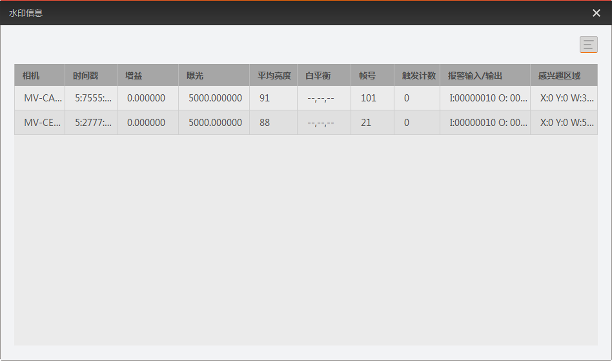

查看水印信息
控制工具条的水印信息工具可查看客户端已连接相机的水印信息。
水印信息通过点击控制工具条的进入。水印信息窗口如下图所示。

图 1 查看水印信息水印信息窗口显示客户端当前连接相机的实时水印信息。
说明
查看相机的水印信息前，需设置相机的水印信息相关参数，具体介绍请见水印信息章节。
用户可通过窗口右上角的 设置显示的水印信息。
设置显示的水印信息。
控制工具条的水印信息工具可查看客户端已连接相机的水印信息。
水印信息通过点击控制工具条的进入。水印信息窗口如下图所示。

图 1 查看水印信息水印信息窗口显示客户端当前连接相机的实时水印信息。
查看相机的水印信息前，需设置相机的水印信息相关参数，具体介绍请见水印信息章节。
用户可通过窗口右上角的设置显示的水印信息。